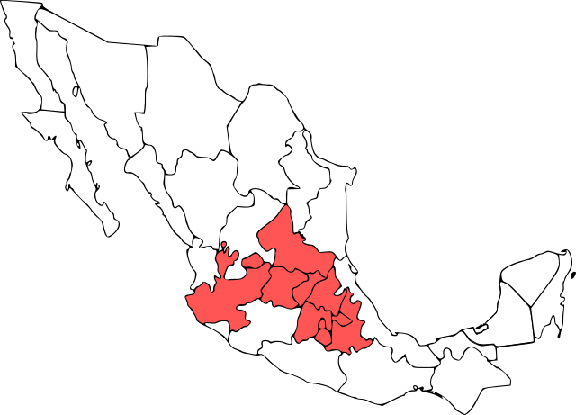

“Especialistas en análisis de corrosión acelerada e intemperismo”.
Acerca de nosotros
Somos una empresa orientada a ofrecer servicios de asesoría, evaluación e interpretación de los resultados de ensayos de corrosión acelerada de productos de metalmecánicos.
Con la VISIÓN de crear un enlace de confianza entre eslabones de la cadena de suminstro de la Industria Automotríz, mediante la homologación de métodos o normativas de calidad, siendo un referente en el área para cualquier consulta y/o servicio; operando con políticas en pro del medio ambiente y bienestar personal.
Contamos con personal capacitado con experiencia en el área de materiales, recubrimientos orgánicos y normatividades internacionales en los Sistemas de Gestión de la Calidad de la Industria Automotríz.
Ubicación
Querétaro, punto geográfico estratégico en la proveeduría automotriz del bajío.
Asesoría
La corrosión causa miles de millones de pesos en daños en infraestructura y productos cada año. Degrada las propiedades útiles de los materiales, especialmente metálicos. En pocos días o semanas Icorr puede reproducir el daño que se produce durante meses o años al exterior.
Ofrecemos nuestra asesoría durante el desarrollo y control de calidad de productos del sector metal-mecánico y automotríz.
Ensayos de Intemperismo
Las pruebas de corrosión acelerada proporcionan la mejor simulación posible en laboratorio de la corrosión atmosférica natural. Estos ensayos se utilizan principalmente para evaluar piezas metálicas con recubrimientos orgánicos e inorgánicos.
- Niebla salina
- Ciclos de Automoción
- Procedimientos:
- ASTM B117: “Práctica estándar para el uso de la cámara de niebla salina”.
- ASTMB368: “Prueba acelerada de niebla salina de cobre-ácido acético (Test CASS)”.
- ASTM D2247: “Prueba de resistencia al agua para recubrimientos con 100% de humedad relativa”.
- ASTM G45: “Modificaciones de la prueba de niebla salina”.
Evaluación de especímenes e Interpretación
Las pruebas y evaluaciones se realizan de acuerdo con los procedimientos estándar apropiados, como:
- ASTM D3359: Método estándar para la prueba de adhesión por el método de la cinta.
- ASTM D522: Métodos de ensayo estándar para la prueba “Mandre Bend” en revestimientos orgánicos.
- Mandrel Bend Test.
- ASTM D3363: Método estándar para la prueba de dureza de película por prueba de lápiz.
- ASTM D2794: Método estándar para la prueba de resistencia de revestimientos orgánicos a los efectos de deformación por impacto.
- ASTM D1654: Método estándar para la evaluación de muestras pintadas o revestidas sometidas a ambientes corrosivos.
Con base a normas de referencia se pueden realizar también exposiciones personalizadas.